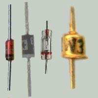
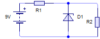
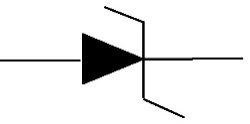

Electrónica analógica 4º E.S.O.
- ELECTRÓNICA ANALÓGICA
- 1. Historia de la electrónica analógica
- 2. Herramientas para la electrónica
- 3. Componentes discretos (I)
- 3.1. Resistencias. Tipos. Identificación
- 3.2. Semiconductores. Unión P-N. Diodos
- 3.3. El condensador
- 3.4. El transistor
- 4. Componentes discretos (II)
- 5. Circuitos integrados
- 6. Montaje de circuitos
- 7. Simuladores para Electrónica Analógica
- 8. Ejercicios y problemas
- Boletín EAN1: diagramas V/I
- Boletín EAN2: código de colores de las resistencias
- Boletín EAN3: asociaciones de resistencias
- Boletín EAN4: ley de Ohm
- Boletín EAN5: ley de Joule
- Boletín EAN6: leyes de Kirchhoff
- Boletín EAN7: diodos
- Boletín EAN8: condensadores
- Boletín EAN9: transistores (estados)
- Boletín EAN10: transistores nivel pringaíllo
- Boletín EAN11: transistores nivel normalillo
- Boletín EAN12: transistores nivel enteraíllo
- Boletín EAN13: amplificador operacional
- Boletín EAN14: temporizadores con 555
- Actividades de ampliación
- Actividades de refuerzo
- 9. Prácticas de electrónica analógica
- Apéndice I: Leyes de Kirchhoff
- Apéndice II: conversión estrella-triángulo y triángulo-estrella
- Apéndice III: estudio teórico del transistor
- Apéndice IV: equivalente Thèvenin de un circuito con transistor
- Apéndice V: Pulse Width Modulation (PWM)
- Apéndice VI: aplicaciones móviles para electrónica analógica
- Apéndice VII: historia de la electrónica (línea de tiempo)
Diodo Zener
El Zener es un tipo de diodo que se utiliza para la estabilización de la tensión en un circuito.
La estabilización consiste en mantener un valor constante a lo largo del tiempo. Es interesante su utilización para proteger determinados elementos especialmente delicados de un circuito que no puedan verse sometidos a variaciones de la tensión.
Puedes verlo en el esquema de la derecha: la carga que coloquemos en paralelo en el circuito (en este caso, R2) presenta una tensión estable entre sus terminales gracias a la presencia del diodo Zener.
El símbolo del diodo Zener es el mismo que el del diodo convencional, pero con el cátodo en forma de Z.
Obra publicada con Licencia Creative Commons Reconocimiento No comercial Compartir igual 4.0